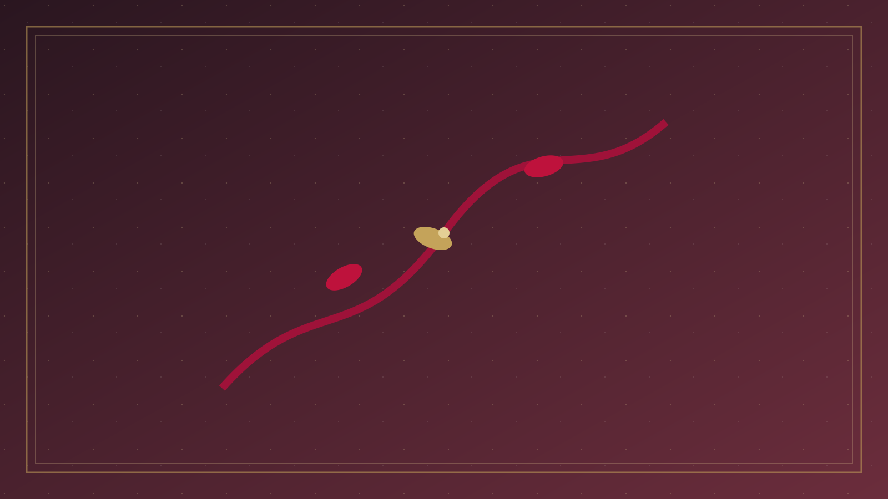

分題 02 / 08
創造秩序
二、創造秩序
聖經對婚姻的第一句話，不是婚姻法，而是創造敘事。創世記一章與二章文體不同、焦點不同，卻彼此補充：一章從神的形像與共同使命說起，二章從具體的人、幫助者、一體與羞恥的缺席說起。
1. 形像、男女與共同治理（創 1:26–28、31）
「神就照著自己的形像造人，乃是照著他的形像造男造女。神就賜福給他們……要生養眾多，遍滿地面，治理這地。」
創世記 1:27–28
「造男造女」不是文化附件，而是形像語言的一部分。治理大地的使命是賜給「他們」，不是把一性工具化、把另一性神化。生育與治理是祝福，不是人人必須複製的同一條人生劇本；但經文確實肯定身體、性別與繁衍在神眼中「甚好」（創 1:31）。人的尊貴先於婚姻狀態：單身者同樣按形像被造。婚姻卻特別承載「男女在盟約中成為一體」這條創造線索，後來被先知與使徒一再取用。
2. 「獨居不好」與幫助者（創 2:18–23）
「耶和華神說：『那人獨居不好，我要為他造一個配偶幫助他。』」
創世記 2:18
「不好」出現在神反復說「好」的創造週之後，張力是刻意的：人在園中有工作、有界線、有與神的關係，卻仍缺一個עֵזֶר כְּנֶגְדּוֹ（ʿēzer kənegdô）——「與他相對的幫助者」。舊約裡 עֵזֶר 常用來形容神自己作以色列的幫助（詩 33:20；70:5），因此「幫助者」不是低下助手的委婉語。經文的重點是對應、相配、結束孤獨，而不是把女方定義為男方計劃的執行者。
動物被帶到那人面前、由他命名，卻「沒有遇見配偶幫助他」（創 2:20）。幫助者不是從被治理的動物中挑選，而是從人自己的「肋旁」而出（創 2:21–22）。那人的認親詞是親族語言：「這是我骨中的骨，肉中的肉」（創 2:23）。一體之先，是同源、同尊、同體的喜樂，不是佔有。
3. 離開、連合、一體（創 2:24–25）
「因此，人要離開父母，與妻子連合，二人成為一體。」當時夫妻二人赤身露體，並不羞恥。
創世記 2:24–25
「離開父母」在古代家族社會裡極為刺耳：新的一體不是把妻子吸進原有父系家族的延長線，而是建立新的忠誠單位。耶穌與保羅都把這節當作規範性的創造文本，而不是可有可無的古詩（太 19:5；弗 5:31）。「連合」是緊緊黏附；「一體」（בָּשָׂר אֶחָד）包括性的聯合，卻不止於性——它是盟約性的生命聯合。赤身而不羞恥，說的是在信任中的脆弱：還沒有懼怕、比較與掩蓋。
神看為好的，不是抽象的「關係」，而是這一種有界線、有身體、有公開離開與連合的秩序。當代浪漫自主常把「感覺」置於盟約之上；文化父權則常把「離開父母」讀成「女方歸入男方家族、男方仍可把妻子當財產」。兩者都沒有貼著這段文本。